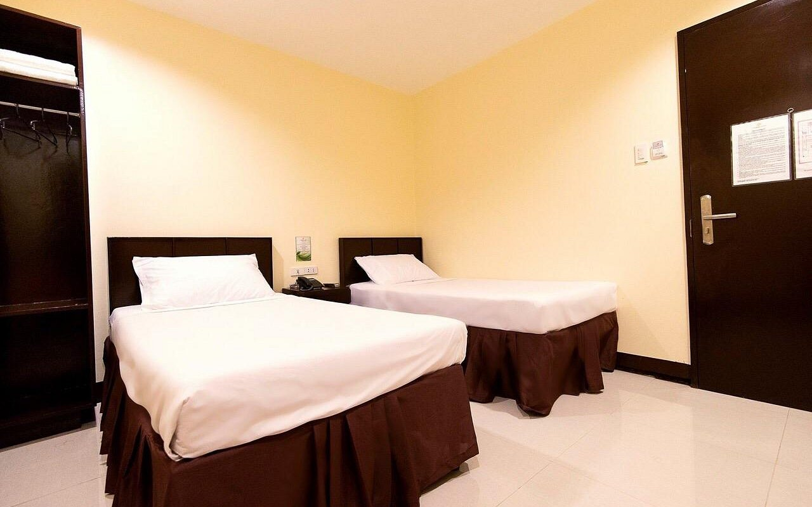

Overview
Luxury tourism in Zamboanga Sibugay combines the province's raw natural beauty with high-end hospitality. Whether it is an exclusive island retreat or a premium stay in the heart of the capital, we cater to travelers seeking elegance, privacy, and top-tier service.
Experience the serenity of private white-sand beaches and the convenience of modern urban luxuries, all while enjoying the personalized warmth of Sibugaynon hospitality.
Popular Luxury Destinations
Winzelle Suites

Located in the bustling heart of the city proper, Winzelle Suites offers a refined blend of comfort and convenience for the modern traveler. This hotel is celebrated for its prime location, providing guests with easy access to major shopping centers, cultural landmarks, and local dining hubs. With its well-appointed rooms, professional service, and relaxing atmosphere, it serves as a premier urban sanctuary for those who want to experience the vibrant energy of the region while enjoying a high-quality stay.
Garden Orchid Hotel

The Garden Orchid Hotel stands as a symbol of sophisticated urban hospitality in the heart of the region. Designed for travelers who seek a refined experience, the hotel features elegant executive suites, world-class dining facilities, and grand event halls. It is the top choice for those looking for premium service and air-conditioned luxury during their stay in the capital.
Ever O Business Hotel

Perfectly blending modern business needs with premium relaxation, the Ever O Business Hotel caters to the sophisticated traveler. This high-end establishment offers streamlined services, contemporary rooms, and professional amenities. It serves as an ideal base for exploring the coast of Sibugay Bay, providing a luxurious one-stop destination for both work and leisure.